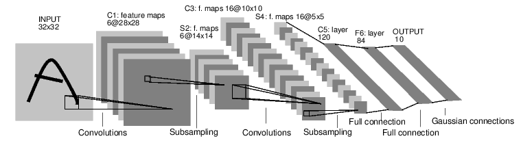
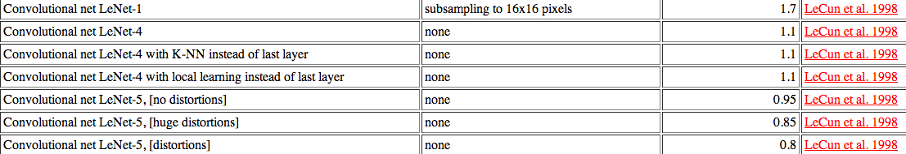

Klasyfikacja pisma odręcznego
Piotr Dubiel
Promotor mgr inż. Krzysztof Chabko
Plan prezentacji
- Głębokie sieci neurownowe
- Konwolucyjne sieci neuronowe
- Ograniczona maszyna Boltzmana i DBN
Głębokie sieci neuronowe
-
przejście z prostej reprezentacji na ogólne pojęcia
- od zbiór pikseli do cyfry
- od listy słów w dokumencie do typu dokumentu
-
klasyfikator tworzący wiele reprezentacji pośrednich
- każda warstwa tworzy nową reprezentację z otrzymanego wejścia
-
potencjalnie cechy wykryte przez klasyfikator będą lepsze od wymyślonych przez człowieka
- analiza takich sztucznie wytworzonych cech jest trudna
- jednak niekoniecznie musimy wiedzieć, co te cechy oznaczają
Problem uczenia wielowarstwowej sieci neuronowej
-
metoda propagacji wstecznej nie nadaje się do zastosowania przy głębszych strukturach
- każda warstwa otrzymuje coraz mniej informacji
- przy tak dużej liczbie wag istnieje duże prawdopodobieństwo utknięcia w minimach lokalnych lub płaskich obszarach
- wyniki dla sieci o głębokich strukturach są często słabsze niż dla płytkich
Konwolucyjna sieć neuronowa
Convolutional neural network
- działa na dwuwymiarowych danych
- jest odporna na translację
-
współdzieli wagi w ramach jednej mapy cech
-
posiada mało wag w porównaniu do klasycznej sieci
- warstwa o 6 mapach cech i jądrze 5x5
- (5x5+1)x6 = 156 wag
- po każdej konwolucji następuje faza próbkowania
- ostatnie warstwy mają pełne połaczenia
LeNet

Źródło: Y. LeCun, L. Bottou, Y. Bengio, and P. Haffner. Gradient-based learning applied to document recognition. Proceedings of the IEEE, november 1998.
LeNet

Źródło: http://yann.lecun.com/exdb/mnist/
Ograniczona maszyna Boltzmana
Restricted Boltzman machine
- podstawowym elementem jest stochastyczny, binarny neuron
$$
p(y=1) = sigm(\sum\limits_{i} x_{i} w_{ij})
$$
- każda warstwa mapuje zestaw cech wejściowych na inny zestaw cech
- warstwy są w stanie generować przykłady
- uczenie polega na trenowaniu każdej warstwy oddzielnie
Źródło: http://www.cs.toronto.edu/~hinton/adi/index.htm
Praca dyplomowa
Aplikacja mobilna rozpoznająca tekst pisany odręcznie, komunikująca się z serwerem
i porównanie tego podejścia z samodzielną aplikacją mobilną.